9/1/2024 - Red Mountain Trail
Most of the hike followed along a trail from the Red Mountain trailhead parking lot, wrapping west around the canyon and following it south. Then I hiked off trail to the east down a few ledges and explored the area. Nice views of the canyon and little shade, but no one else hiking, maybe because it was about 95 degrees.
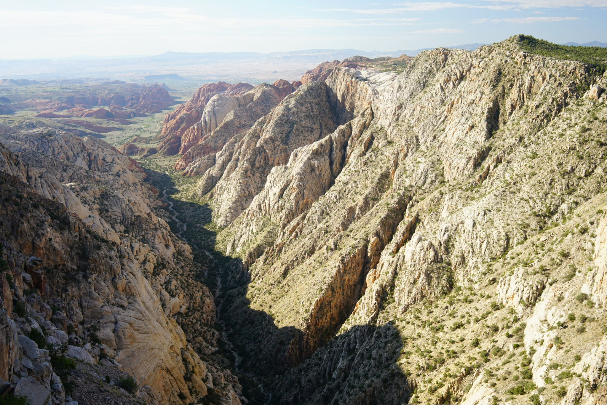
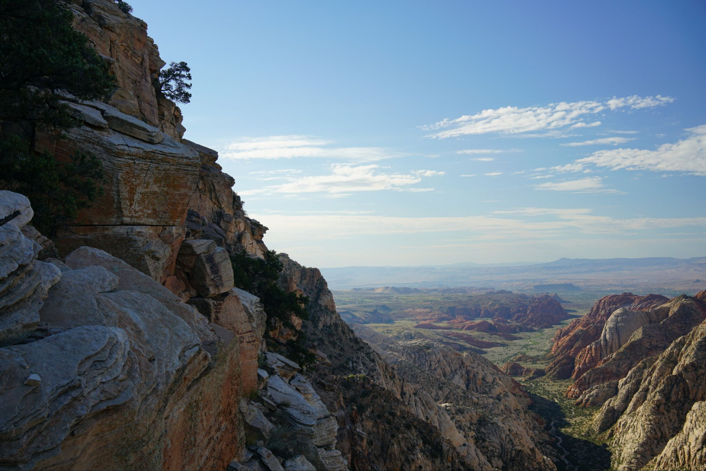
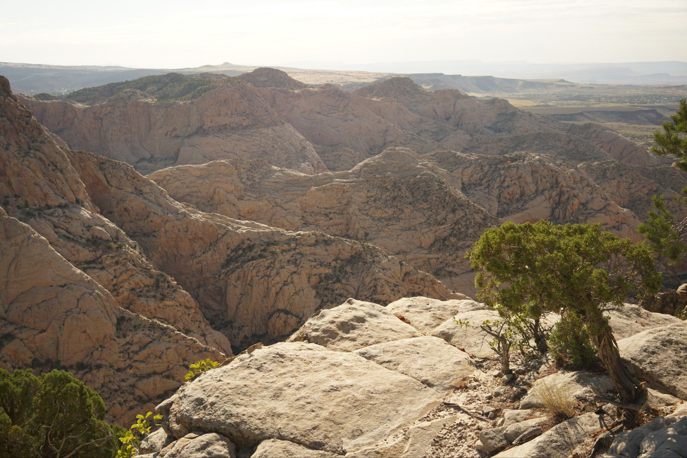
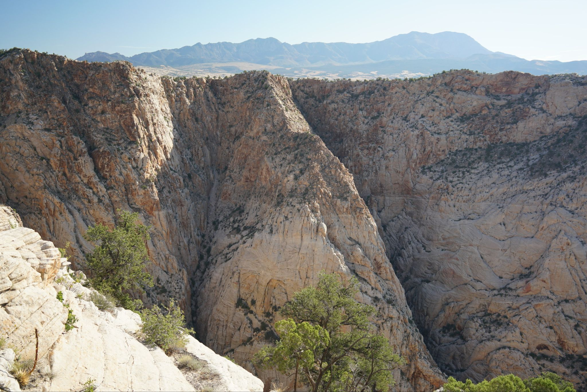
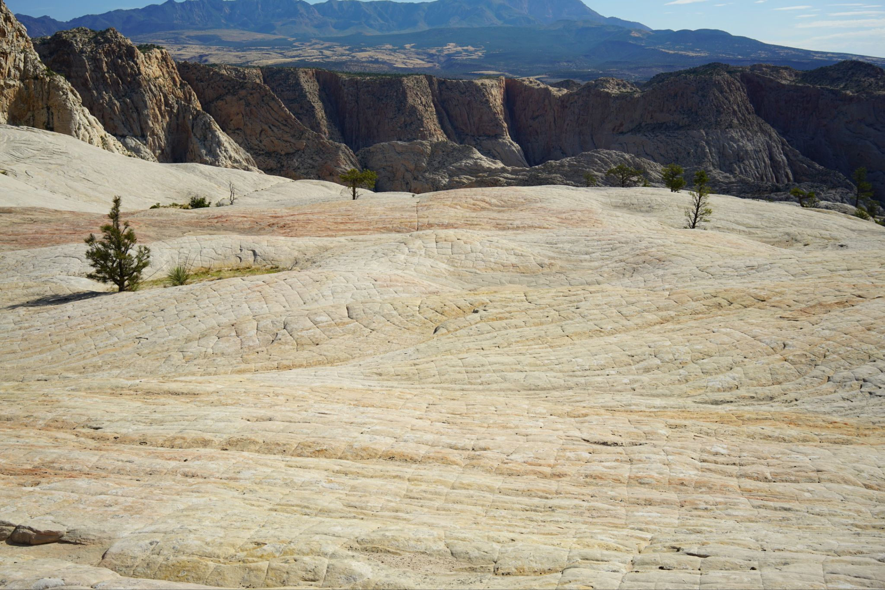
A "hanging pool", dry, and a few small ponderosas, unusual for this low of elevation.
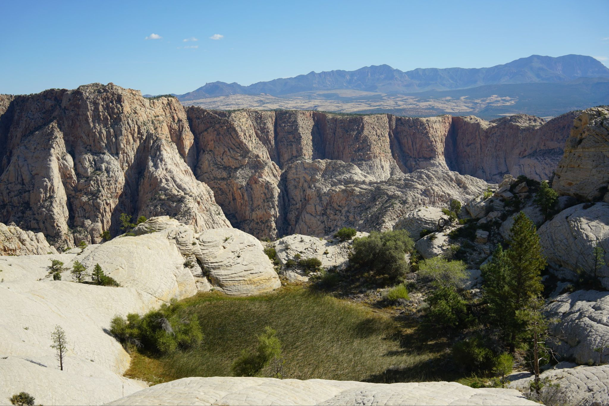
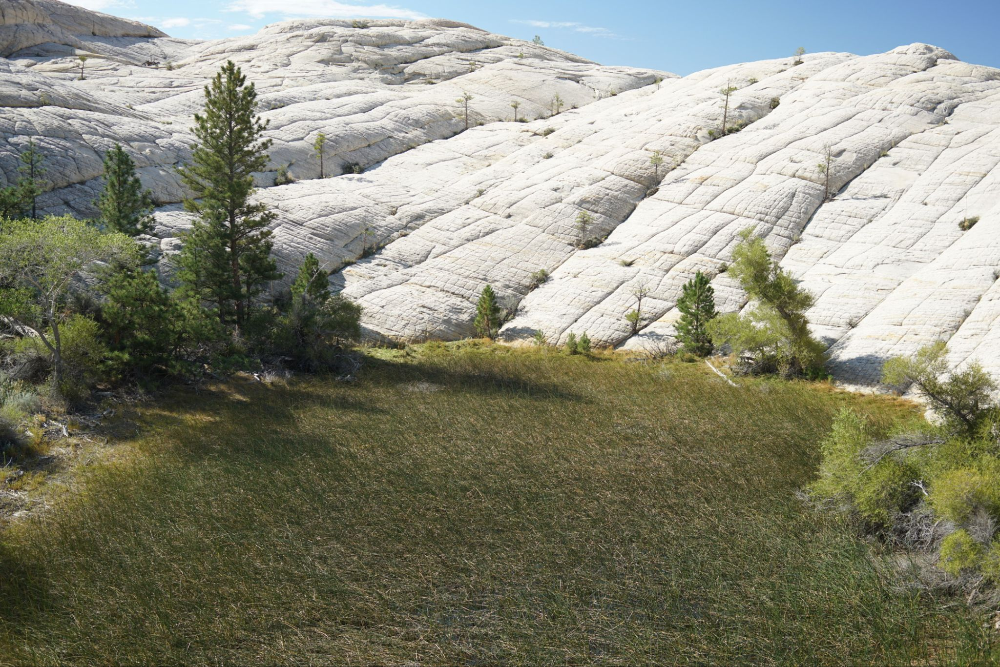
On a previous day I had tried navigating up the canyons from the bottom, from Snow Canyon State Park with not much luck due to the dense vegetation.
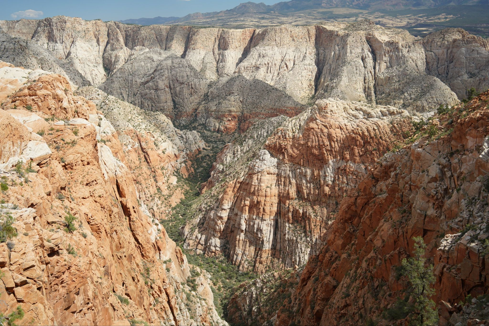
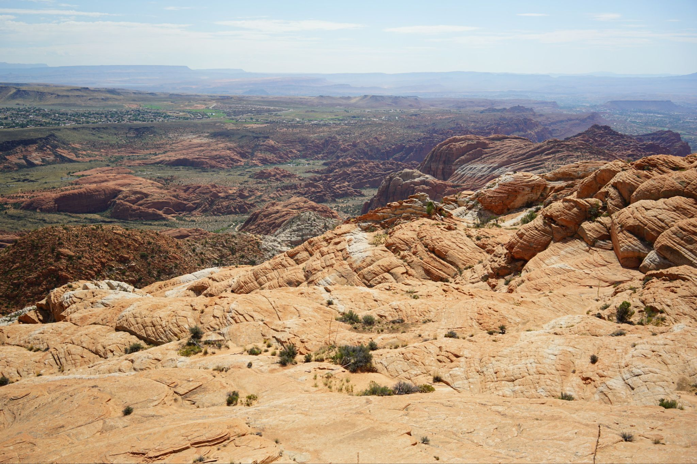
Some cool veins of sandstone
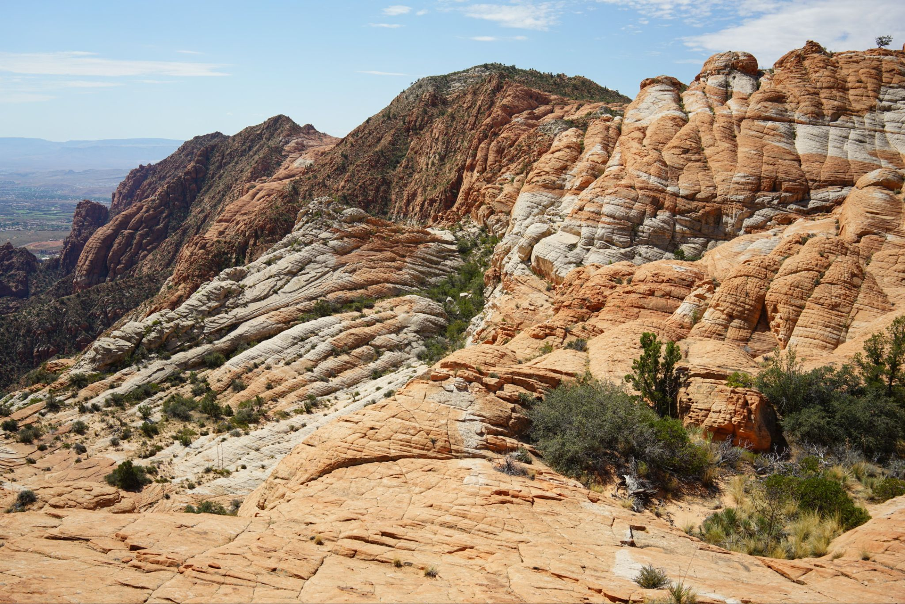
Looking towards the cool shaded bands on Petroglyph mountain in the distance, a really fun scramble.
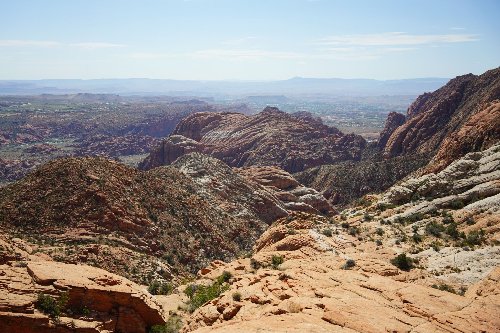
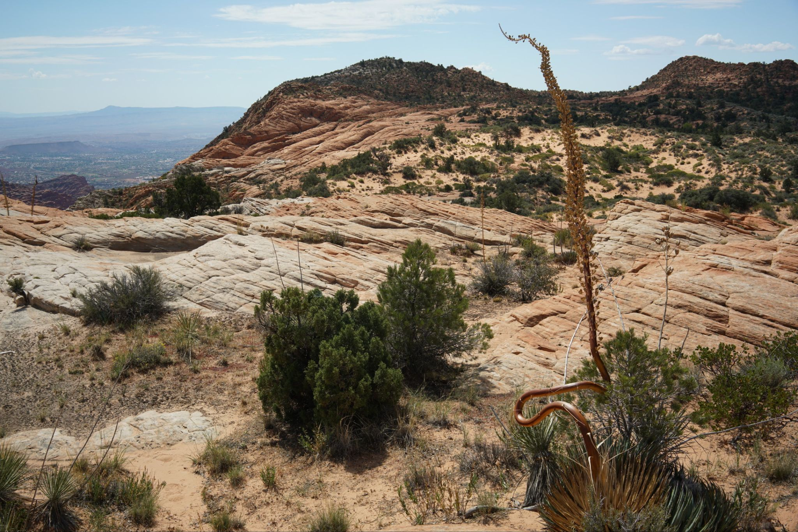
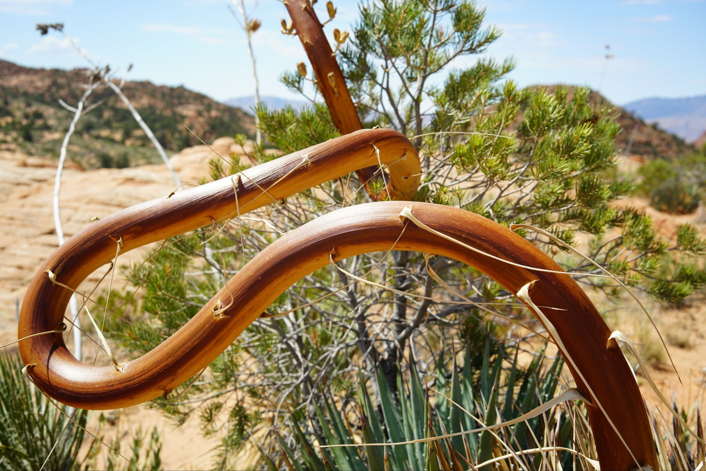